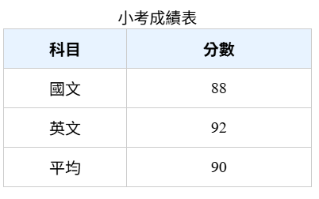
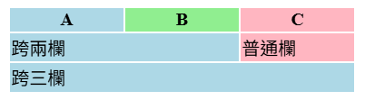

網頁程式設計
節錄常用HTML標記與常用CSS屬性 (停止更新)
標頭區(HTML)
以head標籤包住內容, 用於設定文件
常用功能
- meta網頁資訊
- title網頁標題
- style內部CSS
- link載入外部CSS、Google Fonts、網站圖示...
- script載入JavaScript...等
範例
HTML
head
設定網頁的字元編碼, UTF-8 支援中文, 避免產生亂碼
meta charset="UTF-8"
RWD:讓手機裝置能以正常比例顯示網站
meta name="viewport"
content="width=device-width, initial-scale=1.0"
網站標題(顯示在瀏覽器標籤上)
title網站標題/title
外部CSS
link rel="stylesheet"
href="style.css"
內部 CSS
style
body {
color: #020202;
line-height: 1.6;
}
/style
/head
網頁區塊結構(HTML)
| 標籤 | 語意 | 用途 | 預設 display |
|---|---|---|---|
| header | 頁面或文章開頭 | LOGO、標題、主選單 | block(會換行) |
| nav | 導航 | 主選單、導覽列 | block |
| main | 主內容(唯一) | 頁面核心內容(整個網頁只能有一個) | block |
| footer | 頁尾 | 版權、聯絡方式、連結群組 | block |
| article | 可獨立內容(通常包含自己的header, footer) | 文章、貼文、資訊卡 | block |
| section | 主題區塊 | 章節、主題內容 | block |
| aside | 側欄 | 補充資訊、廣告、工具欄 | block |
| address | 聯絡資訊 | 作者資訊、Email、地址 | block |
| time | 時間語意標籤 | 日期、時間、修改時間、發文時間...等 | inline(不換行) |
範例
HTML
body
header.../header 頁首
nav.../nav 導覽列
aside.../aside 側欄
main 主內容
section.../section
section.../section
/main
article.../article
footer.../footer 頁尾
/body
以上使用header, nav, main, footer, article, section, aside為例(沒有打出CSS的部分), 結構大致如下

內容區(HTML)
body
為網頁的主要內容區
範例
HTML
head.../head
body
h1主標題/h1
p段落內容/p
/body
h1~h6
標題文字
p
段落文字, 用於呈現一般文本內容
範例
HTML
p這是一段文字/p
br
用於強制換行
範例
HTML
p第一行br第二行/p
hr
用於分隔內容或章節的水平線
常搭配CSS屬性
- border
- height
- margin
- width
- background-color
範例
HTML
h2標題/h2hr
p段落內容/p
!-- ... --
用於註解, 不會顯示於瀏覽器上; 或拿來暫時關閉HTML程式碼片段(CSS要使用/* 註解文字 */)
範例
HTML
p
...這段文字會顯示... (註解用文字不顯示於瀏覽器)
/p
div
區塊容器，用於布局或包住其他內容。
範例
HTML
div包住的內容套用css
div class="header"
p內容/p
/div
CSS
內距外距設為10px
.header {
margin: 10px;
padding: 10px;
}
span
行內文字容器, 通常用於局部套用樣式。
範例
HTML
span包住的內容二字體變白色
p內容一
span style="color: white"內容二/span
/p
字體設定(HTML)
em
用於使文字呈現強調語氣, 預設以斜體顯示
範例
HTML
p
...段落...
em重點文字/em
...段落...
/p
i
表示斜體, 用於表示專有名詞、術語...等
範例
HTML
pi一段斜體文字/i/p
center
用於使文字、圖片、表格...等置中(過時屬性, 已被CSS取代)
HTML
pcenter置中這段文字/center/p
strong
用於使文字呈現強調語氣, 預設以粗體顯示
範例
HTML
p
...段落...
strong一段加粗的重點文字/strong
...段落...
/p
b
純粗體, 用於標題、裝飾、術語...等
範例
HTML
h2b標題加粗/b/h2
s del strike
皆用於呈現刪除線，<s> 表示內容不再正確/適用/有效, <del> 在語意上表示已刪除, <strike> 為視覺上的純刪除線(過時屬性, 已被CSS取代)
範例
HTML
p原價s1000元/s優惠價800元/p
pdel被刪除內容/del新內容/p
small
用於使字體縮小, 常見於註解、版權說明...等
範例
HTML
p...內容...small(註解)/small...內容../p
u
增加文字底線,常用於標示重要文字
範例
HTML
pu底線標註文字/u/p
mark
用於標記/高亮文字, 預設為黃底黑字
範例
HTML
pmark底線標註文字/mark/p
sup sub
用於使文字變為上標/下標
範例
HTML
p銨根: NHsub4/subsup+/sup/p
圖片、多媒體、超連結...
img
用於插入圖片, 預設為inline(不換行)
HTML屬性
- src: 圖片來源路徑或URL(必填)
- alt 替代文字, 圖片無法顯示時顯示文字
- width/height: 設定圖片寬高, 可用px或%
- title:滑鼠移上顯示提示文字
- loading 延遲加載圖片, 值為lazy或eager
範例
HTML
img src="picture.jpg"
alt="小圖示"
width="200"
title="一段提示文字" /
img src="picture.png"
alt="一張圖片" /
下圖為呈現在網頁上的樣子
audio
用於播放音訊檔, 可搭配控制列、循環播放或延遲加載
HTML屬性
- src: 音訊來源檔案路徑或URL
- controls: 顯示播放控制列
- autoplay: 自動播放
- loop: 循環播放
- muted: 靜音
- preload: 預載策略 (auto / metadata / none)
範例
HTML
audio controls
source src="audio.mp3"
type="audio/mpeg" /
您的瀏覽器不支援音訊播放。
/audio
下列為播放效果示範
video
用於播放影片檔, 可控制播放、暫停、音量, 可搭配字幕
HTML屬性
- src: 影片來源檔案路徑或URL
- controls: 顯示播放控制列
- autoplay: 自動播放
- loop: 循環播放
- muted: 靜音
- width/height: 設定影片尺寸
- poster: 預覽圖片
範例
HTML
video controls width="100%"
poster="video.mp4"
source src="video.mp4"
type="video/mp4" /
您的瀏覽器不支援影片播放。
/video
下列為影片播放效果示範
iframe
用於嵌入另一個 HTML 文件或網頁
HTML屬性
- src: 嵌入頁面網址
- width/height: 設定尺寸
- frameborder: 邊框控制(過時屬性)
- allowfullscreen: 允許全螢幕
範例
HTML
iframe title="rickroll"
src="https://www.youtube.com/embed/dQw4w9WgXcQ"
width="100%"
height="400px"
allowfullscreen /
下列為嵌入網頁效果示範
清單(HTML)
ul ol li 網頁清單
ul 為無序清單(unordered list), 以符號建立沒有順序的清單, 預設圖案為實心圓.
常用於功能列表、導覽列...等
ol 為有序清單(ordered list), 以數字或字母建立具有順序的清單, 預設為數字.
常用於步驟、流程、排名...等
li 為清單項目(list item), 無序跟有序清單裡的每個項目都要用li表示. 項目裡可放入文字、圖片或p、div、span...等標籤
範例
HTML
ul
li項目/li
li項目/li
li項目/li
/ul
ol
li項目一/li
li項目二/li
li項目三/li
/ol
網頁表格(HTML)
table
為整個表格的容器, 用於包住整張表格
tr / th / td
tr為表格列(table row)
td為一般儲存格(table data), 用在大部分資料欄位
th為標題儲存格(table head), 預設為置中粗體 , 常用於欄位標題或列標題
caption
為表格標題, 位於表格上方, 說明整張表格用途
thead / tbody / tfoot
把表格分成三大區塊(可選用)
thead 用於表格標題列
tbody 用於主資料
tfoot 用於總結、附註...等
colgroup / col
用於設定整欄欄位的屬性(style, ...)
範例
HTML
style
table {
width: 70%;
border-collapse: collapse;
margin-top: 10px;
}
th,
td {
border: 1px solid
#ccc;
padding: 8px 8px;
text-align: center;
}
th {
background: #e8f3ff;
font-weight: bold;
text-align: center;
}
div {
border: 1px solid
#ccc;
}
/style
table
表格標題
caption小考成績表/caption
使第一欄寬度變成100px, 第二欄變成150px
colgroup
col style="width: 100px"
col style="width: 150px"
/colgroup
表格標題
thead
tr
th科目/th
th分數/th
/tr
/thead
科目跟分數資料
tbody
tr
td國文/td
td88/td
/tr
tr
td英文/td
td92/td
/tr
/tbody
總結分數平均
tfoot
tr
td平均/td
td90/td
/tr
/tfoot
/table
下圖為呈現在網頁上的樣子

補充
下圖為同時使用colgroup與colspan在網頁上的樣子

HTML
table
colgroup
col style="background: lightblue; width: 100px"
/
col style="background: lightgreen; width: 100px"
/
col style="background: lightpink; width: 100px"
/
/colgroup
tr
thA/ththB/ththC/th
/tr
tr
跨兩欄(A+B), 會套用第一與第二欄的樣式/寬度
td colspan="2"跨兩欄/td
td普通欄/td
/tr
tr
跨三欄(A+B+C), 會套用全部三欄樣式
td colspan="3"跨三欄/td
/tr
/table
文本屬性(CSS)
color
用於設定文字顏色
常見值
- 色名（red, blue, black...）
- 十六進位色碼（#ff0000, #333333）
- RGB/RGBA（rgb(255, 0, 0)、rgba(255, 0, 0, 0.63)）
- HSL( hsl(120, 100%, 50%) )
範例
css
文字顯示為亮藍色
p {
color: #1a73e8;
}
font-size
用於設定字體大小
常見值
- 絕對單位: px, pt
- 相對單位: em(相對父元素), rem(相對根字體)、％
- 關鍵字: small, medium, large
範例
css
固定大小
h1 {
font-size: 24px;
}
比父元素大 1.2 倍
p {
font-size: 1.2em;
}
font-family
用於設定字體字型
格式
font-family: "主字體", "候補字體", sans-serif;
範例
css
瀏覽器會依序嘗試使用前面的字體，若無法載入就使用後面的
body {
font-family: "Noto Sans TC",
"Segoe UI", sans-serif;
}
font-weight
用於設定字體粗細
常見值
- 關鍵字: normal、bold、lighter、bolder
- 數值: 100(極細)→ 900(極粗)
範例
css
h1 {
font-weight: bold;
}
h2 {
font-weight: 600;
}
text-align
用於設定文字水平對齊方式
常見值
- left(靠左)
- center(置中)
- right(靠右)
- justify(左右對齊)
範例
css
h1 {
text-align: center;
}
p {
text-align: justify;
}
line-height
用於設定行距
常見值
- 數值(如1.5 → 1.5倍字高)
- 長度(如24px)
- 百分比(如150%)
範例
css
行距較寬, 易讀
p {
line-height: 1.8;
}
text-decoration
用於設定文字裝飾線
常見值
- none(無裝飾)
- underline(底線)
- overline(上線)
- line-through(刪除線)
範例
css
移除超連結底線
a {
text-decoration: none;
}
顯示刪除線
.del {
text-decoration: line-through;
}
顏色與背景屬性(CSS)
background-color
用於設定元素的背景顏色
常見值
- 色名（red, blue, black...）
- 十六進位色碼（#ff0000, #333333）
- RGB/RGBA（rgb(255, 0, 0)、rgba(255, 0, 0, 0.63)）
- HSL( hsl(120, 100%, 50%) )
範例
css
section {
background-color: #f0f0f0;
}
background-image
用於設定元素的背景圖片
格式
background-image: url('圖片路徑');
範例
css
元素背景顯示指定圖片
div {
background-image: url('image.jpg');
}
background-size
用於控制背景圖片的大小
常見值
- auto: 保持圖片原始大小(預設值)
- cover: 讓圖片完全覆蓋元素, 可能裁切部分圖片
- contain: 讓圖片完整顯示在元素內, 可能出現空白
- 指定寬度與高度(如px, em, rem, %)
範例
css
背景圖片完全覆蓋元素
div.cover {
background-image: url('bg.jpg');
background-size: cover;
}
背景圖片完整顯示, 可能有空白
div.contain {
background-image: url('bg.jpg');
background-size: contain;
}
自訂寬高
div.custom {
background-image: url('bg.jpg');
background-size: 150px 100px;
}
opacity
用於設定元素透明度, 值從0(完全透明)到1(完全不透明)
範例
css
div {
opacity: 0.5;
}
尺寸屬性(CSS)
width
用於設定元素寬度(如px, %, em, rem, vw)
範例
css
元素寬度固定 300px
div {
width: 300px;
}
height
用於設定元素高度(如px, %, em, rem, vh)
範例
css
元素高度為視窗高度的 80%
div {
height: 80vh;
}
max-width/min-width
用於限制元素最大/最小寬度(如px, %, em, rem, vw)
範例
css
元素寬度不會小於200px, 大於500px
div {
max-width: 500px;
min-width: 200px;
}
max-height/min-height
用於限制元素最大/最小高度(如px, %, em, rem, vh)
範例
css
元素高度不會小於100px, 大於400px
div {
max-height: 400px;
min-height: 100px;
}
佈局屬性(CSS)
display
用於變更元素呈現方式
常見類型
- block(區塊元素): 會換行, 可設定寬高
- inline(行內元素): 不換行, 寬高無效(隨內容)
- inline-block(行內區塊): 不換行,但可設定寬高
- none(隱藏元素): 完全不佔空間(和visibility: hidden不同)
- flex(彈性盒模型): 子元素可自動排列,對齊換行
- inline-flex(行內彈性盒): 與文字同行, 但具flex特性
- grid(網格佈局): 以行列方式排列子元素
- inline-grid(行內網格): 與文字同行, 但具 grid 特性
範例
css
div { display: block; }
預設div為block
span { display: inline; }
預設span為inline
img { display: inline-block; }
常見圖像樣式
.hidden { display: none; } 隱藏
.container {
display: flex;
justify-content: center; 水平置中
align-items: center; 垂直置中
}
.grid {
display: grid;
grid-template-columns: 1fr 2fr;
gap: 10px;
}
position
用於控制元素在網頁中的定位方式
常用值
- static: 為預設值, 依照HTML結構自然排列(不脫離文件流)(top/right/bottom/left無效)
- relative: 相對於原本位置微調, 不影響其他元素(不脫離文件流)
- absolute: 從文件流中脫離, 根據父層或視窗絕對定位
- fixed: 固定在畫面某處，滾動頁面時不會移動
- sticky: 結合 relative 與 fixed，滾動到指定位置時固定
範例
css
預設定位
div {
position: static;
}
向右下各移10px, 但原本位置仍保留
.box {
position: relative;
top: 10px;
left: 10px;
}
導覽列固定在頂端, 滾動頁面仍保持在畫面上
.navbar {
position: fixed;
top: 0;
width: 100%;
}
一開始隨頁面滾動(relative), 滾到距離頂端0px時會固定(fixed)
header {
position: sticky;
top: 0;
background: white;
}
top/botttom/left/right
在元素設定了position之後, 用於指定該元素相對於定位基準的距離, 常用於元素置中、固定按鈕、黏性導覽列
- top: 元素頂端距離基準頂端的距離, 數值為正時往下移動
- bottom: 元素底端距離基準底端的距離, 數值為正時往上移動
- left: 元素左邊距離基準左邊的距離, 數值為正時往右移動
- right: 元素右邊距離基準右邊的距離, 數值為正時往左移動
範例
css
.container {
position: relative;
top: 20px; 往下移 20px
left: 40px; 往右移 40px
width: 100px;
height: 100px;
}
.box根據最近的.container來定位, 距離上方10px, 右邊20px
.box {
position: absolute;
top: 10px;
right: 20px;
width: 50px;
height: 50px;
}
z-index
用來控制元素前後層級, 須搭配position才會生效, 數字越大越靠上層. 常用於彈出視窗、固定導覽列或側欄在內容上方
比較規則(由低到高)
- 背景與邊框
- 負的z-index
- 無z-index 的區塊
- z-index: auto或0
- 正的z-index
- 新的stacking context(有自己的內部層級)
範例
css
固定側欄於左上角, 位於上層
.sidebar {
position: fixed;
top: 0;
left: 0;
width: 180px;
height: 100vh;
padding: 20px;
box-sizing: border-box;
z-index: 10;
}
主內容區, 在側欄下層
main {
margin-left: 180px;
padding: 20px;
background-color: #ecf0f1;
z-index: 1;
}
overflow
用於決定當內容超出容器範圍時如何顯示. 使用overflow-x僅控制水平滾動; 使用overflow-y僅控制垂直滾動
常用值
- visible: 預設值. 超出的內容照常顯示, 不會被裁掉與滾動
- hidden: 超出部分被裁切, 不顯示, 不滾動
- scroll: 無論是否超出, 都出現滾動條
- auto: 若內容超出, 才出現滾動條
邊距與邊框屬性(CSS)
margin
用於調整元素與外部其他元素的距離, 兩個垂直方向的margin會取最大值
css
四邊相同
margin: 20px;
上下10px、左右30px
margin: 10px 30px;
順序為上右下左
margin: 10px 15px 5px
20px;
常用於置中
margin-left: auto;
padding
用於調整內容與邊框之間的距離, 可單獨設定每一邊
css
padding-top: 10px;
padding-bottom: 5px;
四邊相同
padding: 10px;
上下10px、左右20px
padding: 10px 20px;
順序為上右下左
padding: 10px 15px 5px
20px;
border
用於產生邊框, 可單獨設定每一邊
常用值
- 寬度(width): thin, medium, thick或數值(px, em...)
- 樣式(style): none(無邊框), solid(實線), dashed(虛線)...
- 顏色(color)
範例
css
四邊同寬, 上邊框單獨設定成5px灰色虛線
section {
border-width: 3px;
border-top: 5px dashed
#868686;
}
border-radius
用於產生邊框圓角, 可單獨設定每一角
範例
css
使元素的四個角呈5px圓角
section {
border: 2px;
border-radius: 5px;
}
box-shadow
用於產生元素的陰影效果
常見值
- offset-x(必填): 水平位移陰影, 正值向右
- offset-y(必填): 垂直位移陰影, 正值向下
- blur-radius(選填): 模糊半徑, 數值越大陰影越模糊, 預設0
- spread-radius(選填): 陰影擴散半徑, 正值讓陰影變大, 預設0
- color(選填): 陰影顏色
- inset(選填): 將陰影從外部改為內部陰影, 預設外陰影
格式
box-shadow: (inset) offset-x offset-y (blur-radius) (spread-radius) (color);
範例
css
產生向右與向下各偏移5px, 模糊半徑為10px的黑色陰影
section {
width: 100px;
height: 100px;
background: #4285f4;
box-shadow: 5px 5px
10px black;
}